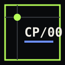

Core
Envelope, event IDs, authorization, agreement, causality, claims, receipts, extensions.

COMMONPACTCORE / RESEARCH RFCCP/00 · OPEN COORDINATION LAYER
CommonPact documents a shared way for people and organizations to discover each other, negotiate privately, authorize the same terms, and keep portable evidence—without requiring one company to own every relationship.
No mandatory platform owner. No canonical backend. No protocol commission. No claim that infrastructure disappears.
01 / THE CURRENT FAILURE
Today a rider often needs Uber or Lyft to reach a driver. A renter needs a marketplace to reach an owner. A sender needs a logistics platform. The service may be useful, but it also becomes the unavoidable gatekeeper for discovery, ranking, terms, records, reputation, and fees.
CommonPact targets the mandatory owner—not every useful intermediary.
02 / SYSTEM BOUNDARIES
The protocol authenticates statements and relationships between statements. Profiles carry domain meaning. Applications carry user experience. Accountable operators still own real-world duties.
Envelope, event IDs, authorization, agreement, causality, claims, receipts, extensions.
Roles, terms, lifecycle, proof, privacy, accessibility, legal and safety boundaries.
Interface, keys, matching, ranking, trust policy, export, disclosure, support integration.
Infrastructure, moderation, incidents, insurance, payment, compliance, human support.
03 / HUMAN JOURNEYS
The core stays small because rides, rentals, deliveries, and donations do not share the same safety or legal meaning.
PactRide remains the complete standalone source profile. Transport safety, insurance, accessibility, and emergency response stay ride-specific.
PactRental tests persistent assets, possession, deposits, condition records, delayed damage, and external remedies.
Sender, courier, subcontractor, recipient, refusal, loss, return-to-sender, and address privacy still require domain research.
CommonPact must not pretend a protocol replaces processors, sanctions checks, tax records, fraud controls, or charity law.
04 / PACT LIFECYCLE
Publish a privacy-limited intent with expiry.
Exchange complete proposed terms privately.
Required parties authorize the identical terms hash.
The profile-defined handoff or obligation begins.
Required parties authorize one portable receipt.
Cancelled, aborted, disputed, and externally resolved states remain explicit. Arrival order never decides truth.
05 / PROFILE FAMILY
06 / CLAIM DISCIPLINE
07 / CURRENT STATUS
DOCUMENTED
The repository includes normative draft semantics, strict payload schemas, cryptographic fixtures, a complete PactRental documentation package, adoption and responsibility analysis, and automated validation.
UNPROVEN
There are no independent implementations, production relays, operating marketplaces, legal approval, safety guarantee, payment custody, or funded deployment team.